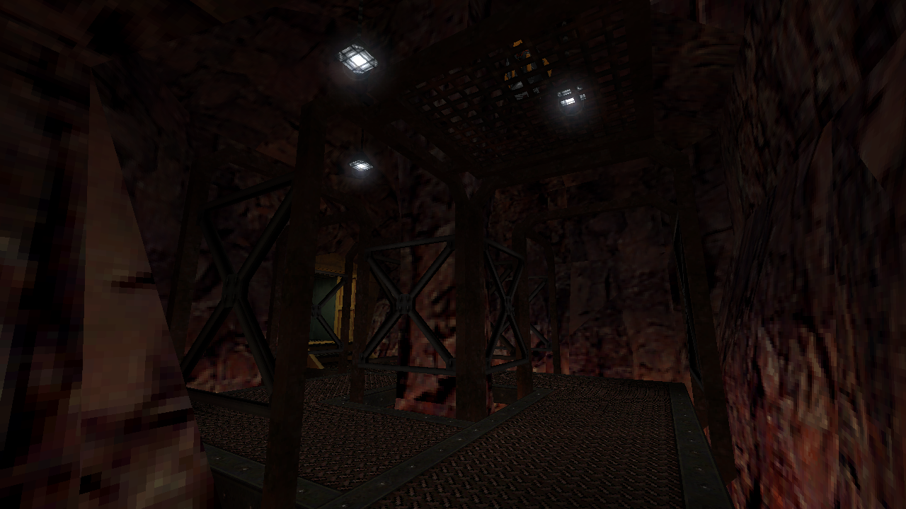
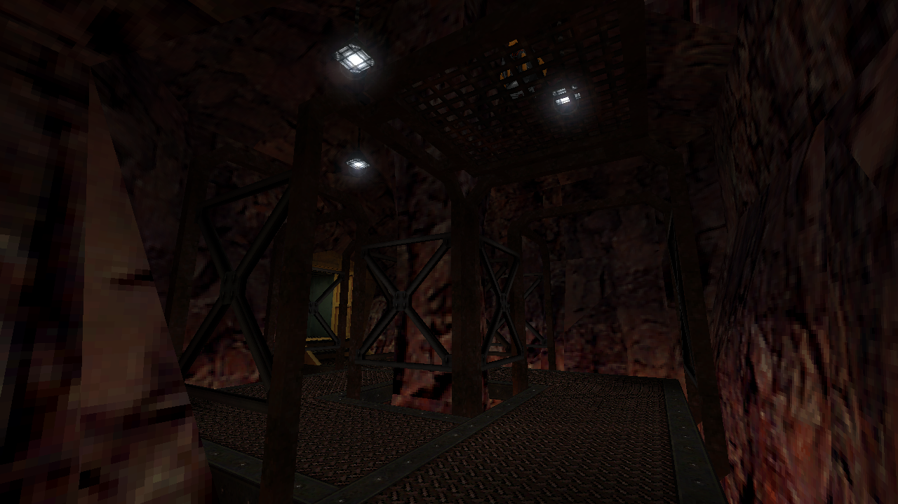
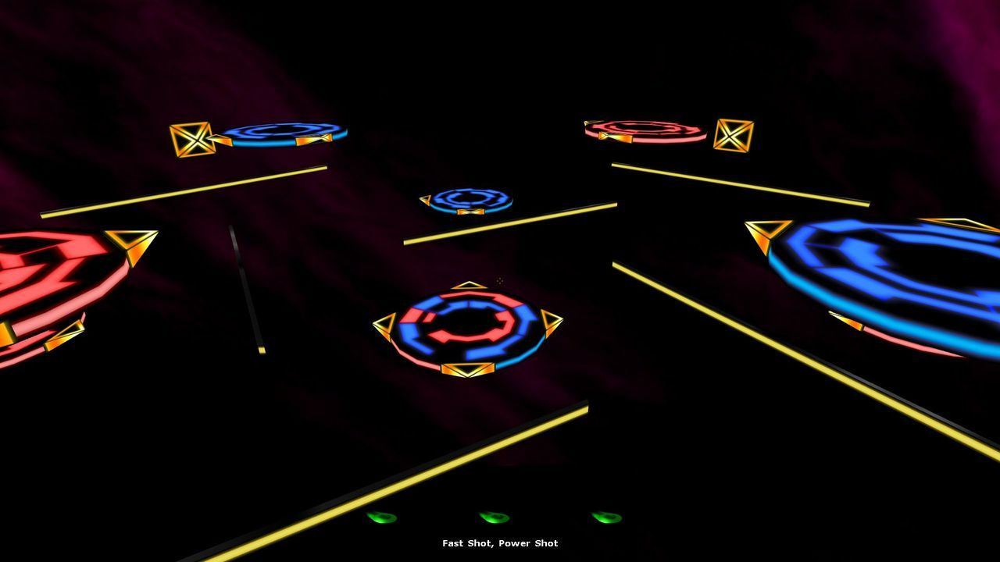
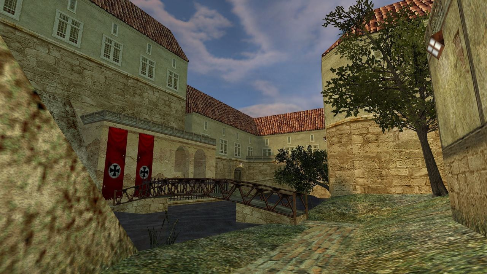
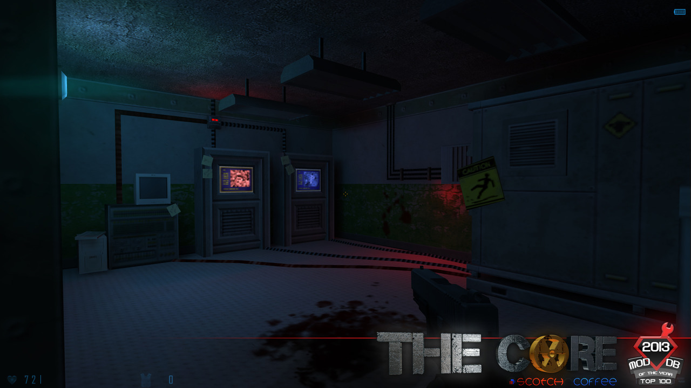
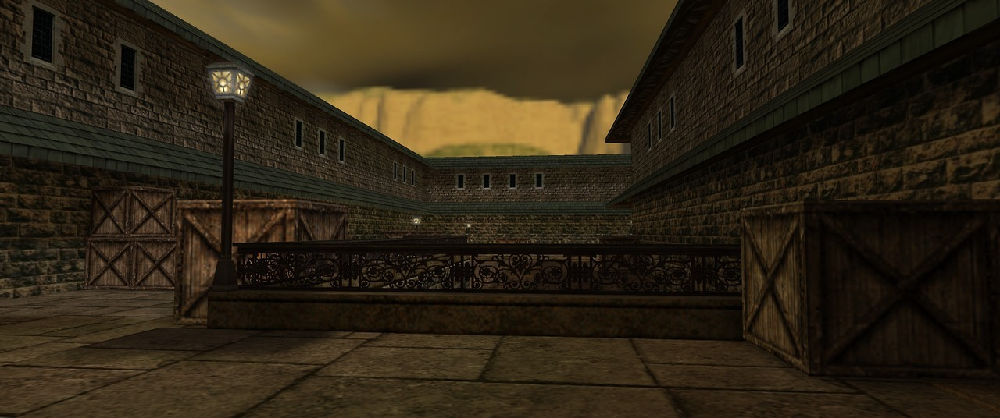
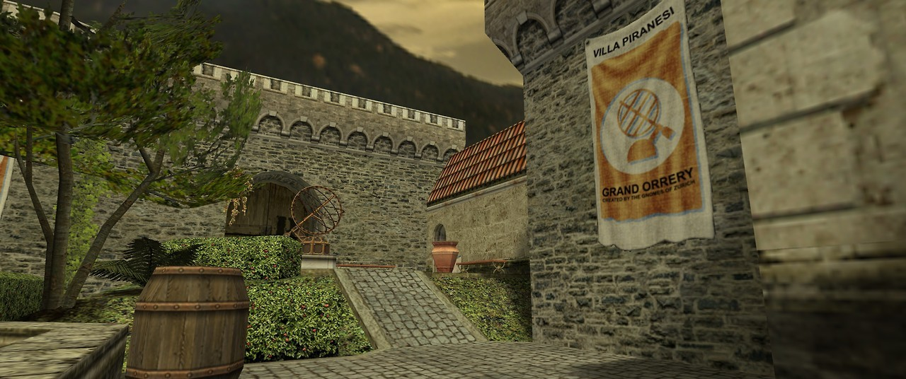
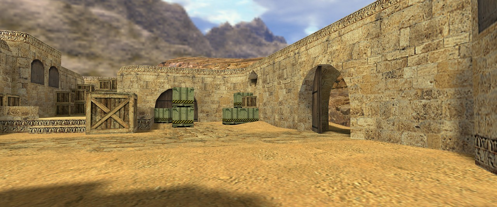
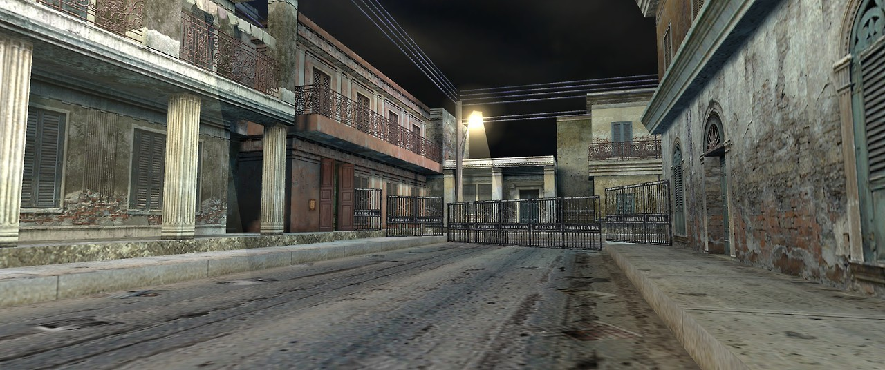
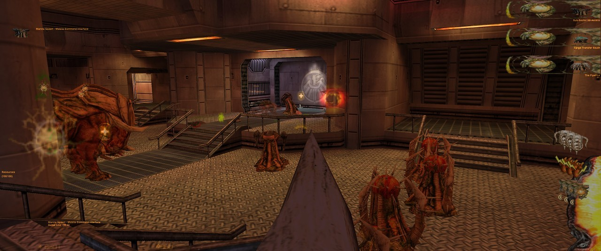

 DM_DangerClose, a WIP remake of Doom 3’s D3DM4 “The Edge 2”, using stock assets.


Focalpoint by Dimitri Vujicic
http://www.runthinkshootlive.com/posts/focal-point-half-life/
 DM_DangerClose, a WIP remake of Doom 3’s D3DM4 “The Edge 2”, using stock assets.

rc_dm1_tourny for Ricochet by
[CAKE]Wha?
Crossport for Half-Life deathmatch by DocRock
Warning: Hazardous Radiation Levels Detected
candyisland for Big Lolly deathmatch by Cayle George
Focalpoint by Dimitri Vujicic
http://www.runthinkshootlive.com/posts/focal-point-half-life/

Half-Life: Nightwatch (unreleased)

dod_glider for Day of Defeat by Wesley Shull

co_sava for Natural Selection by Juan José Alfaro

dm_lister for Half-Life deathmatch by David Will

The Core (upcoming) by James Archibald and Andy Morris

cs_office for Counter-Strike by Alex Manilov
Happy Birthday to Counter-Strike 1.6, now 15 years old! Released January 16, 2003
That wraps up the walk down memory lane 15 years after CS 1.6′s release. Back to our regular programming tomorrow!


DM_Tankfarm, a map I released a while back. All textures by yours truly.

cs_backalley for Counter-Strike by Jamie Mactaggart
Happy Birthday to Counter-Strike 1.6, now 15 years old! Released January 16, 2003
cs_747 for Counter-Strike by Stephen Superville and Leon Nieuwoudt
Happy Birthday to Counter-Strike 1.6, now 15 years old! Released January 16, 2003

de_storm for Counter-Strike by Daank
Happy Birthday to Counter-Strike 1.6, now 15 years old! Released January 16, 2003

de_inferno for Counter-Strike by Chris Auty
Happy Birthday to Counter-Strike 1.6, now 15 years old! Released January 16, 2003
DM_Filtration Released
GET IT HERE

as_oilrig for Counter-Strike by Chris Ashton
Happy Birthday to Counter-Strike 1.6, now 15 years old! Released January 16, 2003
de_torn for Counter-Strike by Nick Coombe and Matt Coombe
Happy Birthday to Counter-Strike 1.6, now 15 years old! Released January 16, 2003

cs_estate for Counter-Strike by David Marsh
Happy Birthday to Counter-Strike 1.6, now 15 years old! Released January 16, 2003

de_cbble for Counter-Strike by Dave Johnston
Happy Birthday to Counter-Strike 1.6, now 15 years old! Released January 16, 2003

cs_militia for Counter-Strike by Andrew Aumann
Happy Birthday to Counter-Strike 1.6, now 15 years old! Released January 16, 2003

de_dust for Counter-Strike by Dave Johnston
Happy Birthday to Counter-Strike 1.6, now 15 years old! Released January 16, 2003

de_prodigy for Counter-Strike by Alex Manilov
Happy Birthday to Counter-Strike 1.6, now 15 years old! Released January 16, 2003

de_piranesi for Counter-Strike by Iikka Keränen
Happy Birthday to Counter-Strike 1.6, now 15 years old! Released January 16, 2003
de_chateau for Counter-Strike by Chris Ashton and Ido Magal
Happy Birthday to Counter-Strike 1.6, now 15 years old! Released January 16, 2003

cs_assault for Counter-Strike by Lari Muuriaisniemi
Happy Birthday to Counter-Strike 1.6, now 15 years old! Released January 16, 2003
de_nuke for Counter-Strike by Jo Bieg
Happy Birthday to Counter-Strike 1.6, now 15 years old! Released January 16, 2003

de_dust2 for Counter-Strike by Dave Johnston
Happy Birthday to Counter-Strike 1.6, now 15 years old! Released January 16, 2003
de_vertigo for Counter-Strike by Chris Auty
Happy Birthday to Counter-Strike 1.6, now 15 years old! Released January 16, 2003

cs_italy for Counter-Strike by Glen Cooper & Jaison Green
Happy Birthday to Counter-Strike 1.6, now 15 years old! Released January 16, 2003

cs_havana for Counter-Strike by Chris Ashton
Happy Birthday to Counter-Strike 1.6, now 15 years old! Released January 16, 2003

de_survivor for Counter-Strike by Michael Visser
Happy Birthday to Counter-Strike 1.6, now 15 years old! Released January 16, 2003
cs_siege for Counter-Strike by Justin DeJong
Happy Birthday to Counter-Strike 1.6, now 15 years old! Released January 16, 2003

de_aztec for Counter-Strike by Chris Auty
Happy Birthday to Counter-Strike 1.6, now 15 years old! Released January 16, 2003

de_train for Counter-Strike by Christopher Mair
Happy Birthday to Counter-Strike 1.6, now 15 years old! Released January 16, 2003

de_airstrip for Counter-Strike by Chris Auty
Happy Birthday to Counter-Strike 1.6, now 15 years old! Released January 16, 2003
Kicking off a few days showing off all the official CS 1.6 maps!

DM_EnPro, a released map.

aim_neon_abyss for Counter-Strike by World Crafter


Work-in-progress map, working title “DM_Filtration”

Half-Life: The Infected (upcoming) by Neclipse
Reckless Abandon, an abandoned, unreleased map.
Pulse for Half-Life deathmatch by Adam Hawkins

DM_Firedamp, a released map.
Black Mesa recreated Half-Life in the Source engine, but what recreating Half-Life 2 in the GoldSrc engine? Half-Life 2: Classic is an upcoming mod that does exactly that.
Wow.

ns_veil for Natural Selection by Andrew Weldon
(endgame, obligatory spawn camping)
Gaia Nova, a released map using zero custom textures.


A few images from early (cut) versions of Half-Life: Opposing Force
Some interesting things to note:
- Adrian Shephard didn’t wear a mask - [beta] face reveal!
- Shock Troopers could control the minds of Pit Drones via a metal plate on their head (see above)
- Half-Life-style grunt models were used in some scenes (likely as placeholders)
- The room where you had to jump over toxic waste using a cargo trolley didn’t have toxic waste (run Otis run)
- Shock Troopers were dark green, and Shock Roaches had white spikes
- It seems that you received the Barnacle early on in the game (although not confirmed)
- Engineers had full Gordon-style beards!
Check out this video by Vect0R to see footage of this stuff. Also credit to Combine Overwiki for some of the images.
db_terrorbird for Public Enemy